void Dlist::Erase(Dnode *n)
{
if (n == sentinel) {
cerr << "You shouldn't delete the sentinel\n";
exit(1);
}
n->flink->blink = n->blink;
n->blink->flink = n->flink;
delete n;
size--;
}
|
Grading:
| 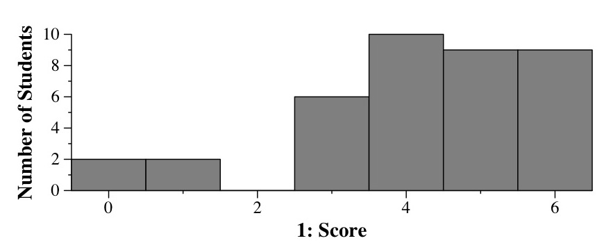 |
| 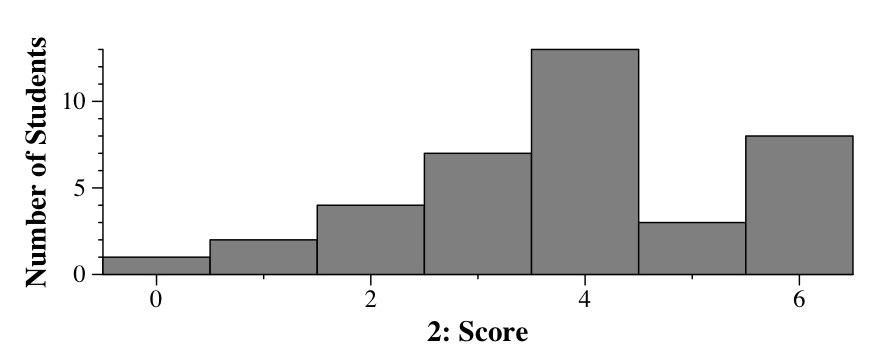 |
D E F G |
Part B: The difference between deques and vectors is that deques allow for efficient insertion and deletion from both ends of the data structure. Vectors only allow for efficient pushing and popping from the rear of the data structure. Therefore, if the vector is size n, then the erase() operation will be O(1) for deques but O(n) for vectors. So the vector implementation is far worse. The difference in performance will be most marked when standard input has a lot of lines. For example, with 100000 lines, the deque version will run with roughly 100,000 operations. The vector version will take roughly 10,000,000,000 operations.
To exemplify, in this directory, the vector version is in tailhalfv.cpp and the deque version is in tailhalfd.cpp. The file input.txt is 100,000 lines:
UNIX> time tailhalfd < input.txt > /dev/null 0.183u 0.034s 0:00.22 95.4% 0+0k 0+0io 0pf+0w UNIX> time tailhalfv < input.txt > /dev/null 30.543u 0.111s 0:31.08 98.6% 0+0k 0+0io 0pf+0w UNIX>Grading: 2 points for the output, 2 points for the explanation, 2 points for the input file/explanation.
| 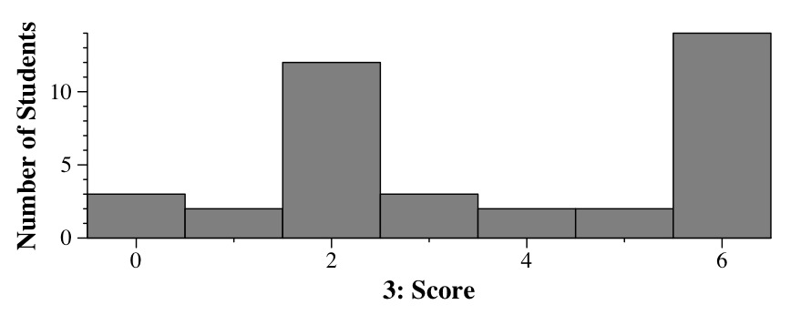 |
We can choose easy values: c = 100 and x0 = 1. At that point, 7x+45 is equal to 52, and 100x is equal to 100. As x increases, 100x grows faster than 7x+45. Thus, for all values of x greater than one, 7x + 45 < 100x, and therefore 7x+45 = O(x).
Grading: 3 points for the big-O definition, 2 points for choosing c and x0, 1 point for tying it all together.
| 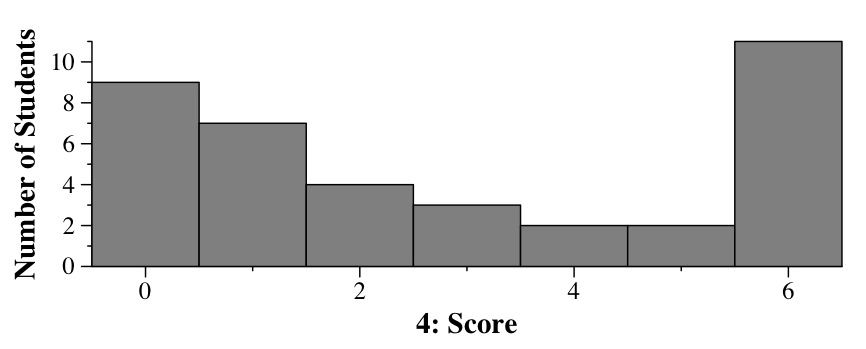 |
| 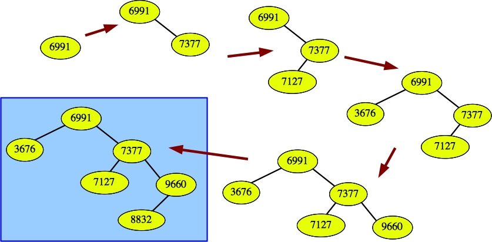 |
Part B:
| 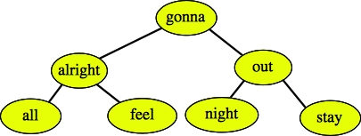 |
You could have replaced "it's" with "night" too.
Grading: 2 points for parts A and C, 2 points for each traversal.
| 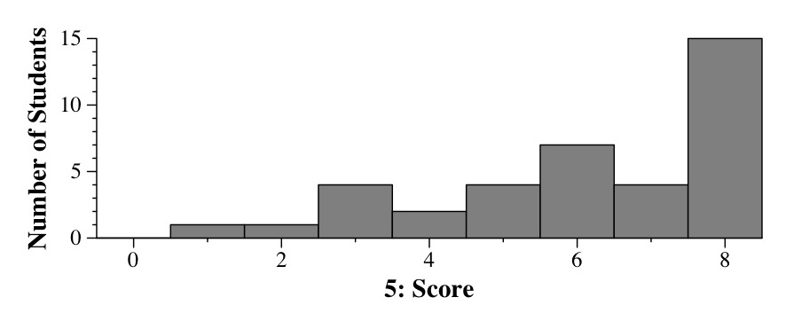 |
| 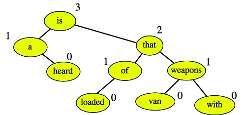 |
Now, this is an AVL tree if the difference between the height of each node's children is at most one. This is true for every node on the tree (if a node's child is empty, its height is -1), so the tree is indeed an AVL tree.
When we insert "what", we traverse each node on the path from "what" to the root, readjust the height if necessary and check the balance condition. When we do this, we see that "is" is not balanced:
| 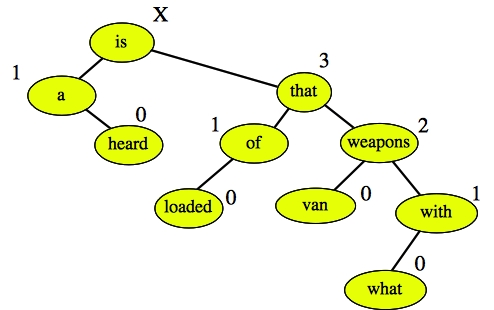 |
This is a zig-zig imbalance, so we rotate once about "that" to yield the following tree:
| 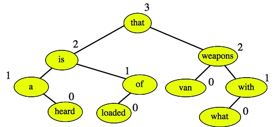 |
Grading: 2 points for the definition, 2 points for labeling the tree so that it matches the definition, 2 points for the insertion.
| 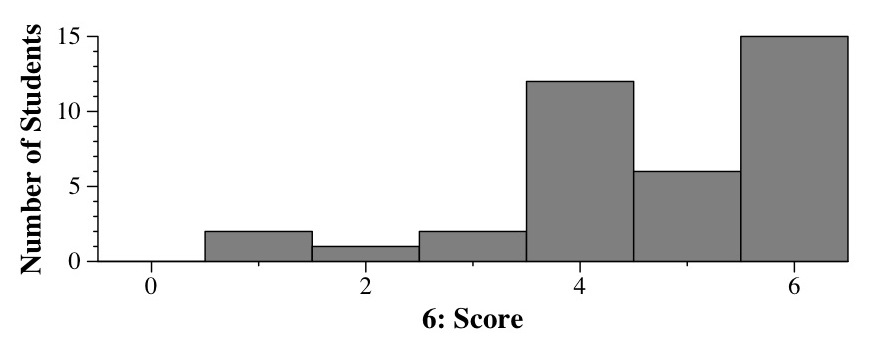 |
Next, traverse the map to find the maximum number of votes in the map.
Finally, traverse the map again and find out who has that number of votes. If more than one person has it, return the empty string immediately. Otherwise, return the person. The code is in topcode.cpp:
string RabbitVoting::getWinner(vector <string> names, vector <string> votes)
{
map <string, int> v;
map <string, int>::iterator vit;
int i;
string winner;
// Determine everyone's number of votes:
for(i = 0; i < votes.size(); i++) {
if (votes[i] != names[i]) v[votes[i]]++;
}
// Find the maximum number of votes:
i = 0;
for (vit = v.begin(); vit != v.end(); vit++) {
if (vit->second > i) i = vit->second;
}
// Find the winner, returning "" if there is more than one:
winner = "";
for (vit = v.begin(); vit != v.end(); vit++) {
if (vit->second == i) {
if (winner != "") return "";
winner = vit->first;
}
}
return winner;
}
|
You could have tried running through the names vector, counting the legal votes for each names[i] by running through the votes vector, and then returning the person with the maximum. However, that would be O(n2), and would run too slowly given that names can have 100000 elements.
Grading: 4 points for calculating votes, 4 points for calculating the max and returning the correct name. If you did the O(n2) algorithm, you lost a point and I didn't explain it, so if you're confused as to why you lost a point on the first part, that's probably the explanation.
| 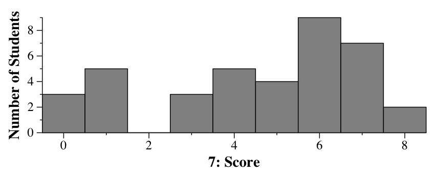 |